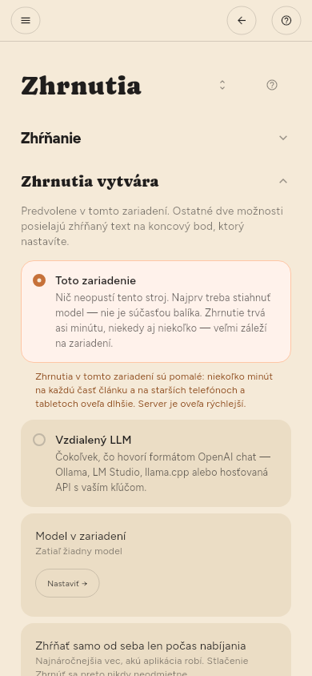

← Čítanie · Obsah · Hľadanie →
Zhrnutia
Kde prebieha zhŕňanie
Nastavenia › Základné › Zhrnutia › Zhrnutia vytvára.
- Toto zariadenie — model, ktorý si stiahnete. Nič neopustí zariadenie. Je to pomalšie a stojí to batériu: niekoľko minút na každú časť článku a v starších telefónoch a tabletoch oveľa dlhšie.
- Vzdialený LLM — váš vlastný server alebo cloudové API. Rýchlejšie, stojí peniaze a je to jediný prípad, keď text článku niekam odíde.
Každá možnosť má vlastnú stránku v časti Pokročilé: Model v zariadení pre toto zariadenie a LLM server pre server. Obe stránky sú tam vždy; tá, ktorá sa nepoužíva, to hore uvádza.

Výber modelu
Nastavenia › Pokročilé › Model v zariadení › Nájsť model. Vyhľadajte, otvorte pri výsledku Varianty a uvidíte súbory v ňom — líšia sa veľkosťou a práve veľkosť rozhoduje, či sa súbor zmestí — a stiahnite ten, ktorý chcete.
Nastavenia › Pokročilé › LLM server › LLM server › Model. Načítať modely vypíše všetko, čo server ponúka, bez zmienky o tom, ktoré z modelov vedia zhŕňať. Pod adresou server s vyskúšaným modelom (dnes iba Ollama Cloud, gemma4:31b) ukáže tento model pod Fungovalo pri skúške s dňom, keď sa skúšal. To je výpoveď o tom dni, nie odporúčanie, a služba sa odvtedy mohla zmeniť. Aplikácia si tiež pamätá, iba v tomto zariadení (nesynchronizuje sa), čo sa s každým modelom na každom serveri stalo: funguje tu po dokončenom zhrnutí (samotné tlačidlo Otestovať to nenastaví), najprv premýšľa pri modeli, ktorý pred odpoveďou uvažuje, a odpovedal 400, keď server povedal, že model sa nedá použiť na chat, s uvedeným dôvodom. Modely, ktoré fungovali, sú v zozname prvé, model, ktorý odpovedal 400, je posledný a zosivený. Žiaden model sa neskrýva a zosivený sa dá tiež vybrať.
Model Gemma 4 E2B alebo E4B v súbore GGUF si so sebou prináša malý pomocný súbor, asi 60 MB, ktorý hádá ďalšie slová, aby ich model overil. S ním píše llama.cpp zhrnutia rýchlejšie; zhrnutia sa môžu od toho, čo model napíše bez neho, trochu líšiť vo formulácii. Stiahne sa na konci sťahovania modelu, uchováva sa vedľa modelu a vymaže sa spolu s posledným modelom svojej veľkosti. Model stiahnutý pred touto verziou ho dostane sám, keď sa aplikácia spustí na neobmedzenom pripojení; dovtedy model beží bez neho.
Nastavenia › Pokročilé › Model v zariadení › Tento hardvér ukazuje procesor, GPU, koľko pamäte má a používa zariadenie a jeho GPU a koľko jej drží SummaReader, znova načítané každé tri sekundy; Kopírovať to vloží do schránky. Aký model a aké kontextové okno sa zmestia, závisí od týchto čísel.
Stiahnuté modely sú v Nastavenia › Pokročilé › Model v zariadení › Modely v tomto zariadení. Spustiť model načíta a urobí z neho model, ktorý odpovedá — spustením ho vyberiete. Naraz beží iba jeden, preto sa spustenie ďalšieho najprv opýta: model v pamäti musí odísť, kým príde ďalší. Výber si aplikácia pamätá a Načítať ho pri spustení aplikácie ho vráti sám. Odstrániť odstráni súbory aj riadok naraz. Riadok každého stiahnutého modelu tiež hovorí, približne koľko pamäte potrebuje s kontextovým oknom a veľkosťou časti nastavenými nižšie, a mení sa, keď ich meníte. Keď model raz bežal, jeho riadok hovorí aj to, čo naozaj použil: pri modeli GGUF, ktorý je načítaný iba počas zhŕňania, koľko zabralo posledné zhrnutie; pri modeli, ktorý zostáva načítaný, koľko drží teraz. V telefóne GGUF model, ktorý potrebuje viac než polovicu pamäte telefónu, aj pri najmenšom kontextovom okne, ukáže na svojom riadku Príliš veľký pre toto zariadenie a aplikácia ho nenačíta: zhrnutie s ním zlyhá a trasovanie uvedie model, čo potrebuje a koľko telefón modelu dovolí. Gemma 4 E2B a E4B, v súboroch GGUF aj LiteRT-LM, majú v súbore veľkú tabuľku, ktorá sa číta len po troškách, takže sa väčšina z nej nepočíta. Model LiteRT-LM sa navyše počíta na viac než veľkosť jeho súboru, pretože tento engine pri načítaní rozbaľuje svoje váhy do pamäte. Model stiahnutý z Hugging Face má tlačidlo Stránka na Hugging Face, ktoré tam otvorí jeho stránku: jeho popis, licenciu a kto ho vytvoril. Keď niektoré modely potrebujú iný engine, zoznam ukazuje iba modely, ktoré spúšťa aktívny engine, s riadkom pod ním, ktorý hovorí, koľko ďalších ich je; Všetky nad zoznamom ukáže všetky modely a aplikácia si vašu voľbu pamätá.
Nastavenia › Pokročilé › Model v zariadení › Modely v tomto zariadení › Kontextové okno je, koľko textu model drží naraz, článok aj odpoveď spolu. Vedľa neho je najviac, čo vybraný model môže v tomto zariadení použiť: menšie z okna, na ktoré bol model trénovaný, a z toho, čo zostane z pamäte po samotnom modeli. Pri modeli GGUF na počítači, ktorého GPU má vlastnú pamäť, a s Nastavenia › Pokročilé › Model v zariadení › Procesor nastaveným inak než na procesor je to voľná pamäť GPU, prečítaná znova pri každom výpočte okna; inde je to pamäť zariadenia. To isté číslo rozhoduje, či Nájsť model označí súbor ako príliš veľký. Väčšie číslo, než je toto, dá modelu jeho maximum. Počítač s dostatkom pamäte môže použiť veľké okno; telefón zvyčajne nie. Zmena sa prejaví pri ďalšom načítaní modelu.
Nastavenia › Pokročilé › Model v zariadení › Modely v tomto zariadení › Veľkosť časti je najviac textu článku, ktorý prečíta jedno volanie modelu; dlhší článok sa číta po častiach a zhrnutia častí sa spoja. Kým to nezmeníte, je to 3 000 tokenov. Väčšia časť znamená menej volaní a väčšina článkov potom dostane jedno zhrnutie z jedného volania, ale malý model môže z dlhej časti napísať skomolený alebo opakujúci sa text. Najviac môže byť to, čo kontextové okno nechá po mieste na odpoveď; je to uvedené vedľa. Spojenie na konci vždy používa celé okno. Zmena sa prejaví pri ďalšom zhrnutí.
Keď sú zapnuté Nastavenia › Pokročilé › Vývoj › Experimenty › Experimentálne enginy, Nastavenia › Pokročilé › Model v zariadení › Engine nastavuje engine, ktorý model spúšťa. Ak model beží, keď vyberiete iný engine, aplikácia sa najprv opýta: Zastaviť a prepnúť model zastaví a potom engine zmení. Keď prepnete späť, model sa znova nespustí. Keď vypnete Experimentálne enginy, aplikácia sa vráti k LiteRT-LM a opýta sa rovnako. Apple Foundation Models je súčasťou systému a netreba ho sťahovať. Keď je vybraný, stiahnuté modely ukazujú iba Odstrániť a vyhľadávanie tam nie je.
Nastavenia › Pokročilé › Model v zariadení › Procesor nastavuje, kde model beží. S Automaticky vyberá engine. Pri llama.cpp Automaticky používa procesor, keď je grafický procesor Adreno (väčšina telefónov s Androidom a čipom Qualcomm), pretože llama.cpp na tomto grafickom procesore môže aplikáciu zastaviť. Aj tak môžete vybrať Grafika; jej nápoveda potom hovorí, že môže aplikáciu zastaviť. Spustiť pri modeli ho načíta na procesore, ktorý ste vybrali, takže s Procesor nastaveným na procesor model najprv nejde na grafický procesor.
Nastavenia › Pokročilé › Model v zariadení › Procesor › Predikcia viacerých tokenov nechá malý pomocný model hádať ďalšie slová, ktoré model overí v jednom kroku. Funguje s modelmi Gemma 4 na oboch enginoch; s llama.cpp len pri Gemma 4 E2B a E4B, ktorých pomocný súbor aplikácia stiahne spolu s modelom. Automaticky ju používa s grafickým procesorom, kde sú súhrny rýchlejšie, ale nie na iPhone či iPade a nie na procesore: na iPade kvôli nej zlyhal každý súhrn. Zapnuté a Vypnuté platia všade. Zmena sa prejaví pri ďalšom načítaní modelu.
Niektoré modely tu nepobežia vôbec — súbor môže vyžadovať grafickú podporu, o ktorú táto verzia nevie požiadať, a aplikácia to povie, namiesto toho, aby to skúšala znova.
Automatické zhrnutia (len Premium)
Automatické zhrnutia sú v Premium. Zhŕňanie beží na konci kontroly nových článkov. Samostatný plán nemá — ak je Nastavenia › Základné › Sťahovanie › Ako často kontrolovať nastavené na Iba keď o to požiadam, nič sa nezhrnie, kým o to nepožiadate.
Na telefóne beží kontrola aj vtedy, keď je aplikácia zatvorená. Po tejto kontrole aplikácia zhŕňa aj na pozadí. Používa model, ktorý ste vybrali, a rovnaké pravidlá ako s otvorenou aplikáciou: len neprečítané články zo zdrojov so zapnutým Zhrnúť, minimálnu dĺžku textu a dva prepínače pod Nastavenia › Základné › Zhrnutia › Zhrnutia vytvára pre nabíjanie a pre neobmedzené pripojenia. Telefón dáva úlohe na pozadí len krátky čas. Pred jeho koncom sa aplikácia zastaví medzi dvoma časťami článku a hotové časti si ponechá. Ďalší beh na pozadí pokračuje od tohto miesta. Článok, ktorý aplikácia nedokončila, sa neoznačí ako neúspešný.
- Android — zhrnutia bežia po každej kontrole na pozadí, v čase, ktorý po kontrole zostáva.
- iPhone — kontrola na pozadí je krátka a nezhŕňa. Zhrnutia bežia v samostatnej úlohe, v čase, ktorý zvolí iOS, zvyčajne počas nabíjania. Na iPhone zhŕňa na pozadí len vzdialený LLM. S modelom v iPhone zhrnutia počkajú, kým aplikáciu otvoríte.
Ak je váš server LLM v domácej sieti, telefón sa k nemu cez mobilné dáta nepripojí. Aplikácia potom nezhŕňa a skúsi to znova pri ďalšom behu na pozadí.
O tom, čo kontrola zhrnie, rozhodujú dve veci:
- Podľa zdroja. Každý kanál má prepínač Zhrnúť, predvolene vypnutý. Nastavíte ho v paneli kanála alebo v Nastavenia › Základné › Zdroje › Zdroje.
- Podľa kontroly. Nastavenia › Základné › Zhrnutia › Zhrnutí naraz určuje, koľko ich jedna kontrola smie urobiť a z ktorého konca frontu postupuje.
| Nastavenie | Význam |
|---|---|
| Zhrnutia na jednu kontrolu | Predvolene 30. Bez obmedzenia urobí všetko, čo čaká |
| Spracovávať | Najnovšie prvé drží krok s novými. Najstaršie prvé vybaví nahromadené |
Vlastný text článku sa stiahne počas kontroly, nie neskôr — najviac dvadsať na kanál za kolo, najnovšie prvé. Článok, ktorý príde bez textu, zvyčajne zlyhal, nie bol odložený, a čítačka povie prečo.
Na každodenné používanie je správne Najnovšie prvé. Ak za jednu kontrolu príde viac, než číslo dovolí, preskočené články s každou kontrolou zaostávajú ešte viac — Najstaršie prvé je spôsob, ako sa k nim vrátiť.
Nastavenia › Základné › Zhrnutia › Zhŕňanie › Minimálna dĺžka textu drží veľmi krátke texty mimo modelu. Predvolená hodnota je 300 znakov. Kratší text sa označí ako príliš krátky a zobrazí sa celý, lebo jeho zhrnutie by bolo dlhšie než samotný text. Krátky príspevok zo sociálnej siete s práve jedným odkazom je iný prípad: aplikácia namiesto neho načíta odkazovaný článok a zhrnie ten, a príspevok ukáže nad zhrnutím. 0 vypne oboje. Zhrnúť v čítačke funguje aj na krátky text. Položka kanála, ktorá je iba obrázok, ako v kanáli webového komiksu, je tretí prípad: aplikácia ukáže obrázok s popiskom ako text, neotvorí stránku a označí ju ako príliš krátku bez ohľadu na toto číslo.
Každé zhrnutie je požiadavka. Pri platenom modeli je počet na jednu kontrolu to, čo každá kontrola stojí, kým sa nepozeráte — oplatí sa ho zvoliť, nie len nechať tak.
Ručné zhŕňanie
- Jeden článok — otvorte ho a stlačte Zhrnúť, alebo stlačte Zhrnúť v páse, ktorý odkryje potiahnutie na jeho riadku. Zhrnie hneď, v dĺžke, ktorú mu dáva jeho zdroj, jeho skupina alebo Nastavenia › Základné › Zhrnutia › Zhŕňanie › Dĺžka prehľadu. Dĺžku pre to jedno zhrnutie zvolíte podržaním tlačidla (dotyk) alebo kliknutím pravým tlačidlom (myš); čítačka obrazovky má akciu Zhrnúť s voľbou dĺžky…. Prvé obyčajné stlačenie vám to povie raz. Nastavenia › Základné › Zhrnutia › Zhŕňanie › Pýtať sa na dĺžku to mení: Vždy sa pýta pri každom stlačení, Pri dlhom stlačení alebo kliknutí pravým tlačidlom je predvolené a Nikdy vypne aj podržanie a pravé kliknutie.
- Jeden kanál — v jeho paneli Zhrnúť tento kanál.
- Čokoľvek vyfiltrované — tlačidlo Zhrnúť všetko v paneli filtrov. Ukazuje, koľko ich urobí, a presne toľko urobí.
V akom jazyku je zhrnutie
Predvolene v jazyku, v ktorom je článok napísaný. Keď stránka neuvádza, v akom jazyku je, aplikácia ho odhadne z textu. Nastavenia › Základné › Zhrnutia › Jazyk zhrnutí to zmení, ak chcete zhrnutia čítať vždy v jednom jazyku.
Malé modely niekedy napíšu zhrnutie napriek tomu po anglicky. Keď je prehľad zjavne v inom jazyku, než sa žiadalo, aplikácia sa modelu opýta ešte raz a druhé zhrnutie si ponechá, len ak je vo správnom jazyku. Čeština namiesto slovenčiny, alebo naopak, sa za chybu nepočíta.
Ak sa nič nezhŕňa
Najčastejšia príčina je, že nie je načítaný žiadny model. Upozornenie to povie a Nastavenia › Pokročilé › Ladenie › Trasovanie zaznamená dôvod každého pokusu.
← Čítanie · Obsah · Hľadanie →